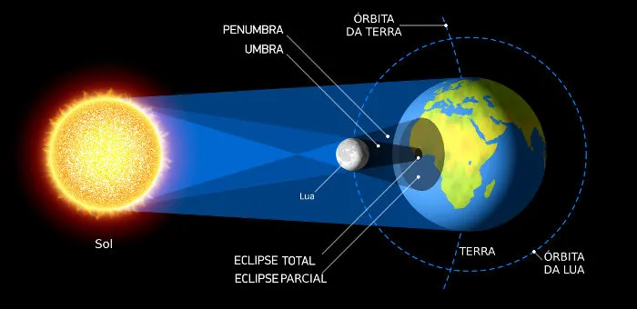

Novo jogo do Homem-Aranha exclusivo para PlayStation 5 traz Peter Parker e Miles Morales em uma nova aventura em um grande mundo aberto repleto de super vilões
Marvel's Spider-Man 2 é o mais novo jogo do Homem-Aranha exclusivo do PlayStation 5 (PS5), sequência de Spider-Man e Marvel’s Spider-Man: Miles Morales. Desenvolvido pela Insomniac Games, estúdio conhecido por títulos como Ratchet & Clank: Rift Apart e Sunset Overdrive, o jogo promete uma aventura de ação em mundo aberto na qual Peter Parker e Miles Morales enfrentarão alguns de seus maiores vilões como Kraven, Venom e mais. Marvel's Spider-Man 2 será lançado exclusivamente para PlayStation 5 (PS5) em 20 de outubro por R$ 349,90. Veja, a seguir, mais detalhes sobre o game.
Eclipse solares totais: " a Lua cobre totalmente a luz solar, projetando sua sombra sobre a Terra;"
Eclipse solares parciais: ""a Lua não fica perfeitamente alinhada com o Sol, cobrindo somente parte de sua luminosidade"
Eclipse solares Anulares: "o tamanho aparente da Lua não é suficiente para cobrir totalmente a luz solar. Esse fenômeno resulta no surgimento de um anel em volta da sombra da Lua."
O eclipse solar ocorre quando a Lua posiciona-se em frente ao Sol de forma que a sua sombra é projetada sobre a superfície da Terra. Durante a ocorrência desse tipo de eclipse, uma pequena região da Terra fica escura por causa da projeção da sombra da Lua. É nessa região, chamada de umbra, que se observa o eclipse solar total. Nos arredores da umbra, encontra-se a penumbra, onde é possível observar um eclipse solar parcial. A diferença entre umbra e penumbra é a luminosidade da região. Os locais onde se pode observar o eclipse total são mais escuros que as regiões circundantes."
Este é o primeiro parágrafo da seção 2.